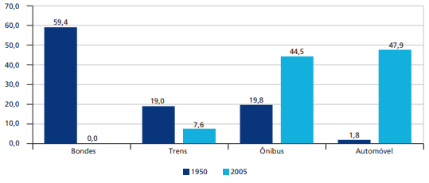
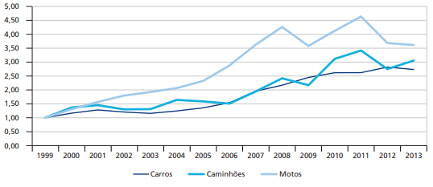

Com o crescimento do transporte individual quando a indústria automotiva no país, há um pouco mais de sessenta anos atrás, ainda era bastante incipiente, os deslocamentos das pessoas nos grandes centros urbanos do Brasil eram realizados predominantemente por transportes públicos coletivos e também por transportes não motorizados, já que as cidades eram mais compactas. O gráfico 1 mostra, com o exemplo da cidade do Rio de Janeiro, que já na virada do século essa realidade estava bastante diferente. Com o avanço da indústria automotiva e o intenso e acelerado processo de urbanização no país, que acarretou em cidades cada vez mais extensas, o uso dos transportes motorizados individuais (automóveis e motocicletas) foram os que mais cresceram nas grandes cidades. Gráfico 1 - Distribuição relativa dos deslocamentos urbanos motorizados do Rio de Janeiro (1950-2005) - Em porcentagem (%)
Com essa nova tendência se iniciando, o Brasil teve um aumento do transporte individual motorizado bastante significativo na época. Em meados da década de 1990, a capacidade de produção de automóveis e motocicletas mais que triplicou. Com o aumento da produção, houve a necessidade de políticas que estimulassem a venda e o uso desses automóveis e motocicletas. Políticas como a 7 redução da carga tributária sobre os veículos até 1.000 cilindradas, que representaram na época mais de 50% das vendas (Gráfico 2). Gráfico 2 - Índice de vendas de veículos automotores no mercado nacional (1999-2013)
Outro fator que contribuiu para a expansão das vendas de veículos automotores nos últimos dez anos, foi o crescimento da renda das famílias, que permitiu que parte delas tivessem acesso a um automóvel individual. Isso somado as políticas que reforçavam o uso dos automóveis e motocicletas, resultou em um forte crescimento da taxa de motorização da população no país e criaram o desestímulo ao transporte público. Ao mesmo tempo que o transporte individual crescia, a partir de meados de 1990, a demanda por transporte público foi sofrendo quedas. Os sistemas de ônibus urbanos que atendiam a 90% da demanda de transporte público tiveram sua demanda encolhida em cerca de 25% desde essa época. Vale destacar também as tarifas de transporte público, que tiveram um crescimento acima da inflação nos últimos quinze anos, ao mesmo tempo que os principais itens associados ao transporte privado tiveram um crescimento real negativo, significando na prática um barateamento do uso e aquisição do transporte privado e o encarecimento do transporte público.